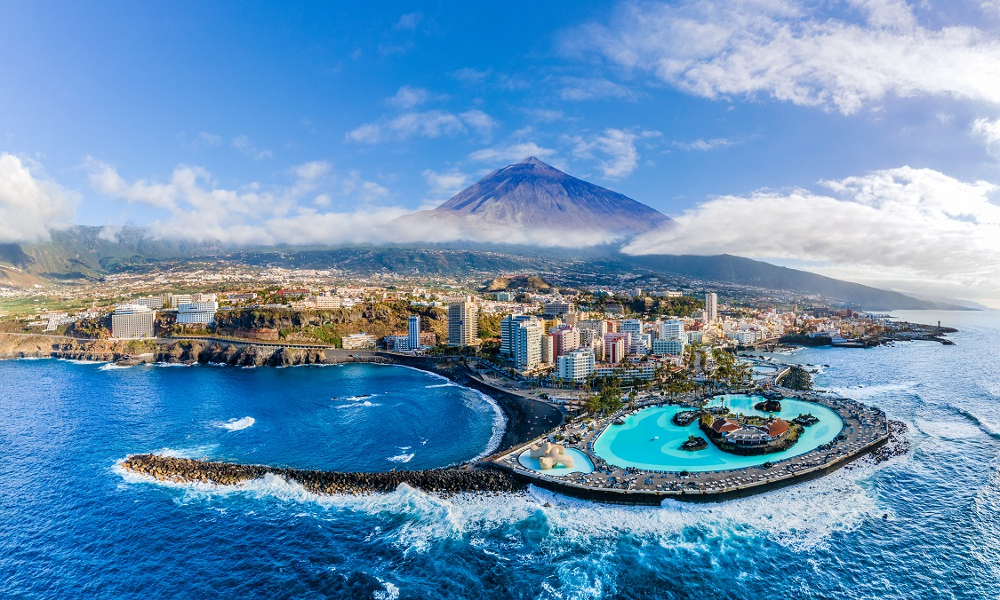
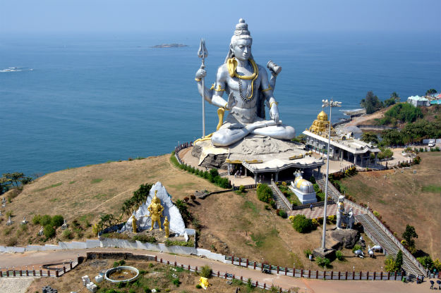
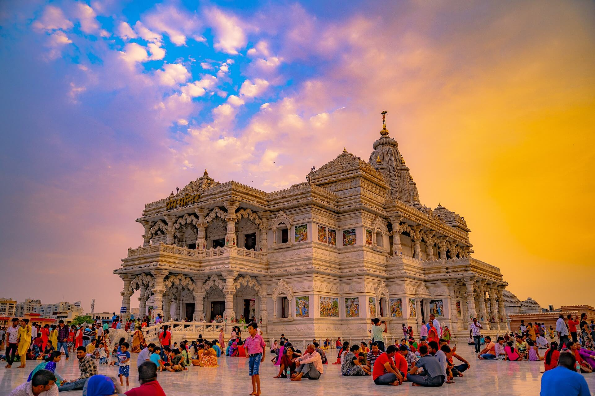

Explore Our Tour Packages
Package 1

Niagara Falls
This is the one of the most popular destinations among the youngsters and the international students in Canada.Niagara Falls, city in the Regional Municipality of Niagara, southeastern Ontario, Canada, a port on the Niagara River opposite Niagara Falls, New York. The city overlooks the Horseshoe, or Canadian, Falls cataract of Niagara Falls; the crescent-shaped cataract is 54 M (177 ft) high and carries nine times more water than its United States counterpart. Niagara Falls is an enormously popular tourist destination, and it also serves as a major source of electricity for Ontario.
Package 2

Banff-National Park
Banff National Park is famous for its vibrant lakes, majestic mountains and easy access to outdoor adventures of all kinds. The park spans 6,641 square kilometres (2,564 square miles) of striking mountainous terrain in the vast wilderness of the Canadian Rockies.
Package 3
Canary Islands-Spain
The Canary Islands were created by a series of volcanic eruptions millions of years ago. The oldest of these is Fuerteventura, which is thought to be over 20 million years old, followed by Lanzarote, Gran Canaria, Tenerife, La Gomera, La Palma and El Hierro, respectively.
Package 4

Eiffel Tower
When the tower opened in the 19th century, it was the world's tallest building at 1,024 feet (312.11 meters). The Eiffel Tower has 1,665 stairs and three viewing platforms. Nearly 50 miles of electric cables cover the structure. There are 120 antennas atop the Eiffel Tower.
Package 5
SomNath temple-Gujrat
World's Tallest Shiva Idol. The construction of Nathdwara Shiva idol in Rajasthan began in 2012, with 2500 tonnes of refined steel. The statue is glazed by high-quality copper, and the 110-feet-high pedestal is made of pure zinc.
Package 5
Vrindavan
What are the interesting facts about Vrindavan? Vrindavan has about 5,500 temples dedicated to the worship of Krishna and his chief consort Radha. It is one of the most sacred places for Vaishnavism tradition. Vrindavan is a significant part of the "Krishna pilgrimage circuit" which also includes Mathura, Barsana, Gokul, Govardhan, Kurukshetra, Dwarka and Puri.